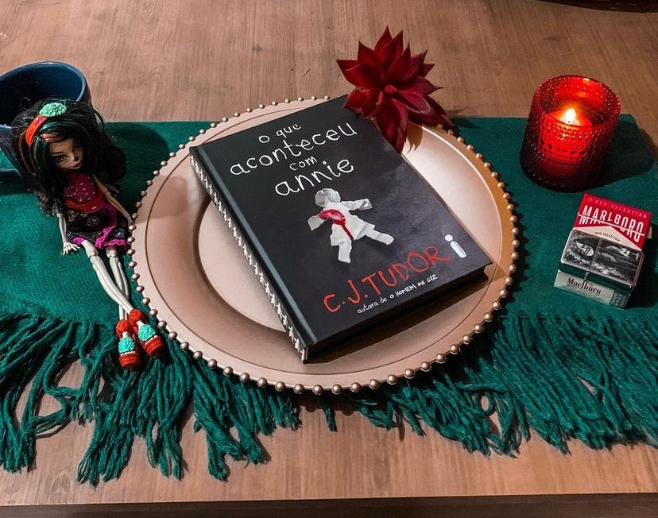

O que Aconteceu com Annie
(C. J. Tudor - @intrinseca )
⭐⭐⭐⭐
Quando Joe Thorne era adolescente, sua irmã mais nova desapareceu. Vinte e cinco anos depois, um e-mail anônimo o leva mais uma vez ao passado: “Eu sei o que aconteceu com sua irmã. Está acontecendo de novo.”
“O que aconteceu com Annie” foi o meu primeiro contato com C.J Tudor e posso destacar vários pontos fortes e fracos da narrativa que diga-se de passagem é interessantíssima. Aqui temos um thriller que apresenta um suspense policial com traços sobrenaturais e já adianto que funcionou bem. É notável que a autora bebe da fonte de Stephen king, ela mesma afirmou que “comparações são inevitáveis”.
Na narrativa nós somos apresentados a Joe, o protagonista que também é o narrador e logo vamos descobrir que ele não é um ser humano tão idôneo assim porém, precisamos dele para saber tudo que aconteceu no passado e claro, desvendar o mistério que se segue.
A autora entrega muitos segredos, mistério e até ação porém, o que me deixou um pouco decepcionada foi que ela “criou coisa demais pra explicar coisa de menos”. O principal ficou bem amarrado porém algumas pontas ficaram soltas e pelo que li sobre os livros dela, isso parece recorrente.
O livro é muito bom, você consegue se ver no ambiente descrito pela autora, sentir as sensações e os sentimentos que são descritos na obra. A premissa do livro de misturar um thriller policial com sobrenatural se encaixou bem e não foi forçada com coisas mirabolantes, que te fazem revirar os olhos. Gostei bastante do final, apesar de achar que faltaram algumas coisas, as famosas pontas soltas.